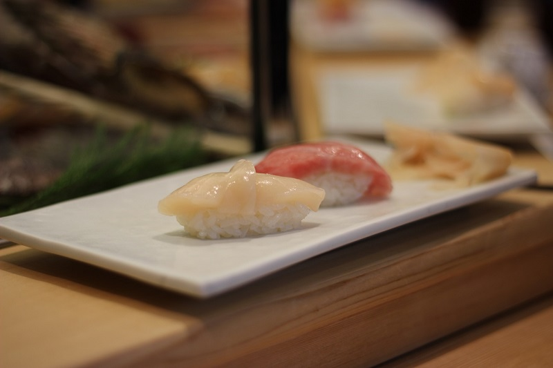
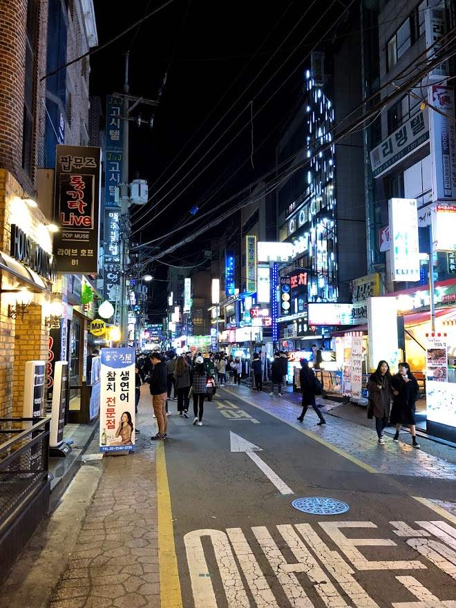
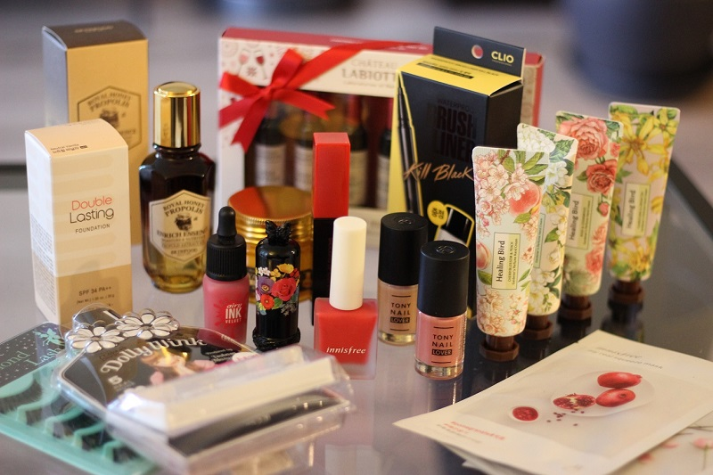

Here’s my first travel post!
I went on a two week trip with 2 of my buddies and my fiance, Chris to Tokyo and Seoul.
Our flight was through Korean Air - SFO -> ICN -> NRT, then HND -> GMP, and finally, ICN -> SFO.
Table of Contents
Day 1: Arrive, Teppan Baby
Day 2: Pumpkin Muffin and Family
Day 3: Meiji Jinguu, Ramen, Shopping Yakitori
Day 4: Tsukiji, Ginza Coffee
Day 5: Last Day in Tokyo, Shopping and Department store food
Day 6: First Day in Seoul, Fried Chicken
Day 7: Myeong-dong - Innisfree Cafe, Street Food
Day 8: DongDaeMun Design Plaza, Flaming Fried Chicken
Day 9: Ddeokbokki, Gimbap, Dog Cafe, Kakao Museum
Day 10: Google Korea, Samsung D’Light, Moomin Cafe, Shangpree Salon, Kimchi Jigae
Day 11: Waxing, MBC Content World, Being an Audience Member for a Live Music Show
Day 12: Jimjilbang day, Karaoke
Day 13: Bukchon Hanok Village, Myeong-dong again
Day 14: Cream filled bread, Jokbal, Itaewon - LINE, BTS, Interesting Cafes, Pizza
Day 15: Last Day of the Trip, Reflections
Tokyo
In Tokyo, we stayed in an Airbnb in the Yoyogi Park area, <20 minutes to Shinjuku station.
Day 1
After arriving around noon to Narita airport, we went straight to the airbnb using the airport metro, and then went out for dinner.
We went to Teppan Baby for the first night - it seemed like a popular destination for tourists.
Here we met up with some American friends living in Japan.
The food here was pretty good.
Day 2
The next morning, we had Boul’ange’s pumpkin muffin - THE BEST MUFFIN I’VE EVER HAD.
It was like a cookie on the outside and cake on the inside. We went to another Boul’ange store during the trip, but they didn’t have it. Disappoint.
Chris and I went off to Shinjuku to shop, and eventually meet up with my cousin from my father’s side who lives in Tokyo, while our travel buddies Judy & Eric went to Tokyo Disney World.
We had unagi for lunch, and went to do purikura.
The rest of the day was spent visiting my mother’s side of the family.
It was great to catch up with the family. They fed us shabu-shabu, sushi, cake, and strawberries.
Day 3
We went to 明治神宮 （Meiji jinguu) to experience some nature & culture.
Our travel buddies Eric and Judy.
The garden had little to none blooming plants, but it was good to see the shrine, bonsai, and some blooming flowers.
For lunch, we had delicious ramen at Hayashi Ramen in Shibuya.
Later on, we went to Omote sandou and Harajuku to look at some stores.
After looking at Freeman Sporting Club tended by hipster looking mustached middle aged Japanese gentlemen, we went to Bathing Ape, where Eric got some expensive sweater and cap. I also fell in love with CUNE - a sort of dark cutesy brand. I got a T shirt there, I wish I can get more.
That night, we went to a Toritatsu where the food was amazing but the service was pretty scary – the two old lady servers scolded us for not putting the menu under the table, “there’s no water, only alcohol”, etc etc.
As the main Japanese speaker in the travel group, I was under a lot of pressure to work it out, but I survived.
We got some combini snacks and drinks and chilled out that night at our Airbnb, watching retro Anime like Dragon Ball Z.
Day 4
We went to Tsukiji, first had breakfast of kaisen-don at Tsukijiro, where a charismatic server (much contrast to the yakitori place) greeted us and entertained us with small talk.
Then we went to a Sushi restaurant, Sushi Say where we had sushi.

We also ran into a cat, so I was pretty satisfied. We also got some strawberry daifuku which was also great.
Later, we went to Ginza to try out Cafe D’Lambre.
I don’t drink coffee, but the coffee there did not taste like coffe – it was like drinking juice from coffee beans.
Really pricey, but worth a shot even if you’re not a coffee person like me.
Day 5
Last full day in Japan!
The day was filled with shopping at various malls and getting dinner from デパ地下 (Department store basement level food areas) from Isetan.
I got some new outfits, and we got around to trying some croquette, beef bowls and saba sushi from the department store, and ate at the Airbnb.
Last dinner in Japan was pretty chill!
Seoul
Our Airbnb in Seoul was right next to the HongDae station (Honggik University Station) and it was the most amazing apartment space.
We could comfortably house 6 people there, so I made sure I made the most of it by staying in the 3rd bedroom.
It had a little roofed patio area where you can relax and get some outside air.
Day 6
After flying into Gimpo airport, we took the airport metro to Honggik University station for our Airbnb.
We went out for fried chicken place, Ing Chicken nearby, towards Yonsei University, and went to a Kakao Friends store.
We also went to a convenience store, and found that there were fewer options for meals compared to the options in Tokyo.
One of the most favored protein choices here from a convenience store was imitation crab.
Day 7
The next day, Chris and I went to Myeong-dong after exploring HongDae, as he had only 4 days in Seoul.
We had lunch at Kyoja Main and it was fantastic – quick service, spicy noodles, warm rich noodle soup.
We also went to Innisfree Green Cafe, where there was a free VR experience of going to Jeju Island.
I enjoyed this so much – it was probably the best VR experience from our 3 experiences in Seoul – with the scented wind, rocking seat, superior soundtrack and okay visuals.
We also had the cloud pancakes and fruit toast. I’ll end up having cloud pancakes later during the trip again here, so photos for cloud pancakes later…
Finally, we enjoyed some street food. Our favorite was the Gyeran Bbang (egg bread). Our mistake was the glazed sweet potatoes. We got too much, and it was not good (dry).
The fried chicken was pretty good.
For dinner, we met back up with Judy and Eric to have some authentic Korean BBQ.
The steamed egg was an especially memorable dish.
The nightlife nearby was pretty popping, unfortunately, we were too tired to be part of it. (A recurring theme)

Day 8
We started off the day going to a local ox bone soup place called Sinseon Seolnongtang.
To me, the ox bone soup was was not too memorable, nor was the kimchi chijimi there.
We took the metro to DongDaeMun design plaza, where we experienced a couple of VR experiences that were not notable.
There was a roller coaster experience with no wind, really bad sound (repeated screaming track on loop).
The design plaza overall had visually interesting architecture and some cool things (community pianos, LED roses).
It was a little underwhelming, but I think it would have been better at night.
The buildings had a few exhibitions but most were just little stores.

We went back to Hongdae, and were pleasantly surprised to see street performers drawing large crowds.
Many groups were dancing to the popular K-Pop hits, and it had a very youthful energizing vibe.
We walked through the Honggik University area to get some yummy, fluffy, soft cream bread (to be also featured later), at 베이커리봉교 and a free market taking place in an outdoor plaza just next to the university.
There, I purchased some postcards from an artist - all featuring Korean landscapes and cats.
I saved my favorite one:
For dinner, we went to Oksang Dalbit for some flaming chicken, poutine, and drinks.
On our way home, we went to Gentle Monster – one of the most memorable experiences in Seoul were from Gentle Monster - a chain glasses shop with art exhibitions. I loved these art exhibitions - one was a scent based exhibition where you can smell concepts such as GMO, Bitcoin, a foreign planet… it was just so neat.
Day 9
We had lunch/breakfast at one of my favorite restaurants in Seoul - 그동네떡볶이 홍대점 which translates to the “The neighborhood tteokbokki”
I loved the Ddeokbokki and Gimbap here. Photos don’t do justice, but here they are:

We then went to a dog cafe called Sunnyne.
It was a lot of fun, and a lot of dogs.
Chris then flew back early to the US of A.
We went to the Kakao Museum back in HongDae, since last time we came by, we were too late for the museum.
I got some interesting photos there, that’s all I can say about the place :P
That night, we went to a pork belly BBQ place called Dojeok.
We had some difficulty communicating with the servers, and I’m not a super huge fan of pork BBQ, but it was a fun experience.
We didn’t have to do the grilling ourselves, the server came by to grill it periodically for a perfect grill.
Day 10
After doing some chores, we went to Gangnam to Google Korea.
The food and view were amazing.

Then, we went to Samsung D’Light where we did some cute little futuristic exercises. It reminded me of “Black Mirror”, except sugarcoated and happy.
I would not particularly recommend this activity. It was nice to get out of the rain though.
Here were my results. I have mixed feelings about them.
I parted ways with Judy & Eric and went to Shangpree to get the S-Energy treatment on my face.
I killed some time in the Moomin Cafe first.
I do really enjoy some alone time in a cafe, makes me feel mature and introspective.
The Shangpree salon experience is as other reviewers say – luxurious. They put your legs in some air pressure massage machine. They unclog your pores with stuff, drip a bunch of essences, and then a gold rubber mask goes onto your face for a while. I fell asleep during the process.
The people there were good at English and I had a great time. It was overall, a pretty good experience. I cannot tell the difference in my skin, but to be fair, I didn’t really have much skin troubles to begin with.
That night, I was really craving Soondubu Jigae, so I looked for a place that served it near our Airbnb, and went there alone.
It was a Seafood specialty restaurant, and noone spoke English, but I did what I could with my bare minimum Korean, and had an amazing meal.
Day 11
Beauty spree! I started off the day with getting my eyebrows & philtrum waxed.
This was the first time getting my face waxed, but the waxing specialist was super nice and pretty, and I just had a great time.
She seemed to be very satisfied with the process (I have quite a bit of hair on my face), especially during the eyebrow waxing.
Here are before and after photos:
We had lunch at a local Donkatsu place where we had a bunch of fried food, then headed over to the Digital Media City for participating in the SHOW.
This was probably the biggest event of the trip. We signed up ahead of time through Trazy to participate in SBS’ live music show. It’s like a top 15 sort of music show with live kpop stars.
But this event started around 7PM, so we had time to kill.
We went to the MBC Content World, which was a “theme park” for this TV station.
We learned a little bit about the history of the station, and did a bunch of augmented reality and trick eye sort of activities.
We watched a holographic concert for Big Bang, and that was pretty fun.
For 18,000 won… hmm… I’d be on the fence whether to recommend or not. Most of these were “getting a photo with your favorite star” sort of activity.
At least the Samsung one was free.
Here’s a photo from one of the AR experiences. Judy and I are dancing with the girl group which is being projected on the screen.
The Show
OK, Now, can we talk about THE SHOW?
- If you are a local, you need to prove that you are a fan of one of the groups to be let in. This is a competitive process, free, but you have already spent a bunch of money on being a legitimate fan.
- If you are not local (like us), you can sign up through the internet and pay money.
- Some portions are pre-recorded, so you can see the live performance end after a segment and the rest of the pre-recorded show play. I think this is to maximize efficiency of setup and teardown between groups.
- There were a lot of indie groups. I actually enjoyed the less known performers a lot.
- I was distracted by a dude in front of me with a huge camera, taking live photos of the performances, retouching it, then posting it on social media real time as the show was going on. What a fun job.
- I attempted to create a playlist of all the performances at the show on Youtube. CHECK IT OUT!!
- I am a fan now of Heyne and Big Pink. That is all.
Here’s a pic of my girl Heyne at that performance. I screenshotted it as soon as she posted it on her instagram story.
Later, we went grocery shopping, and I cooked some healthy ramyun noodles stuffed with vegetables for the group to eat.
Day 12
Jimjilbang day!!!
We took somewhat of a long trip to Aquafield Spa in Goyang.
This place is well reviewed, so I’m not going to talk about it much, but it is so worth the moneys.
My favorite areas were the charcoal and yellow ochre rooms, which are super hot rooms where you lie down and sweat. It’s awesome.
They give you clothes to wear, a locker, food inside that you can purchase with your little tagkey (and get charged later)…
You walk around barefoot and just relax. It was snowing outside and it was so nice to be warm inside.
That night, we karaoked at Hongdae Luxury Su Norebang with some additional friends who happened to be traveling at the same time as us.
Momoland, one of the groups who performed at the show the night before also visited there, not at the same time, but here’s a video proof.
Day 13
We went to Bukchon Hanok village - an area with lots of traditional Korean architecture. The area is actually residential, so you have to be careful not to be a nuisance.
It was beautiful, and one part I really enjoyed was the first Catholic Church on Korean soil. It was cool to see the traditional architecture and a statue of Saint Mary and Baby Jesus together.
It was also nice to see other tourists in Hanbok dresses, it’s just so elegant and picturesque.
This is a cool shot I got of the traditional architecture and modern buildings in the background.
Then, we went over to Myeong-dong again! This was the first time for Judy & Eric, since last time while Chris & I were here, they were at SM Town.
We went to the Innisfree Green Cafe, and this time, I ordered the cloud pancakes. They are souffle pancakes and absolutely delicious. They take around 30 minutes to make though, so prepare to sit around.
Afterwards, we split up. I got some shopping and eating done, and went home to relax.
Later, I went out to get my nails done, at EyeCoco & Nail. This bit was a little awkward because noone knew how to speak English, and the salon was empty.
However, I managed to get away by pointing at the nail artist’s nails and saying “chuseyo”, and got some nice nails!
Day 14
I woke up a little early and went to the bakery that was mentioned on Day 8 for more cream filled bread. I got a box of milk as well, and walked over to the plaza area where the free market had taken place, to sit down and eat.
This was another one of these serendipitous, self-reflecting moments of the trip.
Sure, I was a little bored, but the bread was good, the milk was tasty, I was in a foreign country and it felt like my home.
I decided to try out mukbang (food broadcast) through snapchat, and sent some videos of myself eating to folks back home.
For lunch, we went to Jakbol at Myth Jakbol. These are pig’s trotters. It was really gelatinous and.. flavorwise, I didn’t dislike it, but it was just a lot of food. You can see the loads of garlic that was dumped on top of it.
We got pretty full from that meal, especially since we also ordered hangover soup, which was very peppery.
After that, we took the metro to Itaewon, to check out the LINE flagship store.
I use LINE with my family, so it was fun to buy gifts for them at LINE stores.
This one was also special because it showcased BT21 - characters designed by the famous K-Pop group BTS. All the merchandise were sold out, but it was great to see the sketches, animations, and drinks based on the BTS members’ characters.
Overall, it felt like it was a job well done. My favorite was Cooky.

In addition to eating at the LINE Cafe (I had a very tall soft serve ice cream that fell over instantly, which I ate from a cup), we also went to Ways of Seeing.
“Ways of Seeing” featured neon art and neon dessert. The overall vibe was very hip.
We had dinner at an “Original Pizza Chicago” place where the pizza was a huge cracker with cheese on top of it. I do not recommend going to this place, though I did get a pretty nice photo.
Finally, we went to another Cafe called Take-out Drawing where we had some aesthetic drinks.
I ordered a cafe latte with meringue cookie on top. It had a clever name, but I forgot what it was.
Here are the other stuff that people got; they were also pretty.
Day 15
Final day. We didn’t do much, except go back to the Gimbap & Ddeokbokki restaurant again, shop, pack up, and go home.
I got some last minute skincare on sale from Skinfood – I have to admit that I felt pretty lucky, since one of our other travel buddies bought it not on sale.
The flight back was nice, though I watched Bladerunner 2049, which 1. shouldn’t be viewed on a plane 2. made me cling onto Judy since it was just so… tense.
I took a picture of my total beauty-related purchases in Japan and Korea (including one gift, the Anna Sui lipstick from my aunt, and excluding Innisfree powder, which I forgot).

My Top 3:
- Tony Moly liptint in Ruby
- Airy Ink Velvet from Peripara in 02
- Royal Honey Essential Queen’s Night Cream
I loved the lip tints because it made me really blend in with the crowd. The ladies (and some gentlemen) there are serious about having color on their lips!!
Reflection time:
- I learned the joy of traveling alone in a country where you don’t speak the language. It’s a challenge, but it is very rewarding.
- I learned the joy of traveling in a group. You can learn a lot from going outside of your comfort zone, like I did with the SBS Music Show.
- It’s nice to hang out with family abroad, especially when we’re all grown up and doing it for fun.
- Korean culture is awesome. Japanese high end brands are kind of fun. I spent a lot of money.